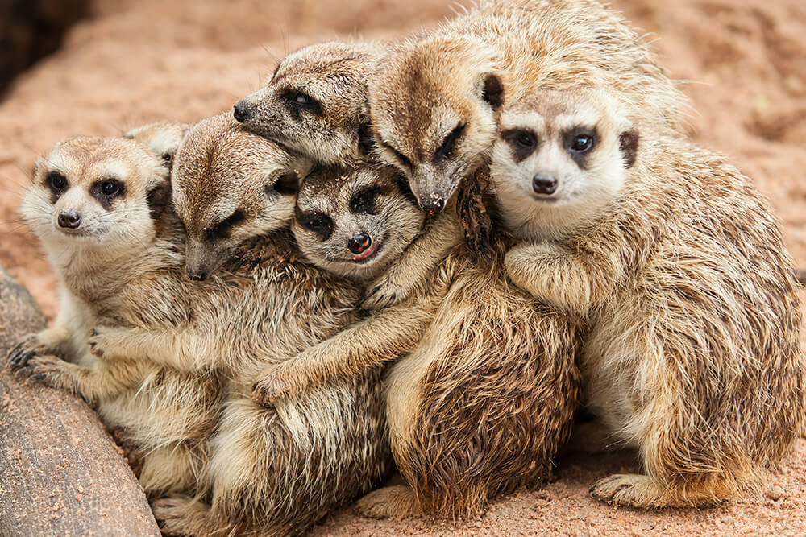

Meerkats
These small pack animals are found in the deserts of Southern Africa. 
San Diego Zoo - Public Domain
Siamang Gibbons
These lesser apes are found along the Malay peninsula and the island of Sumatra.
Marwell Zoo - Public Domain
Servals
Serval cats are found in the wild in the savannas of Africa.
Craig Taylor - Panthera - CCO
Asian Small-Clawed Otters
As their name suggests, these otters are found in Southern Asia. 
Santa Barbara Zoo - Public Domain
Kea
These unique birds are the only alpine parrot in the world, found in a small part of New Zealand.
Science Learning Hub - Public Domain